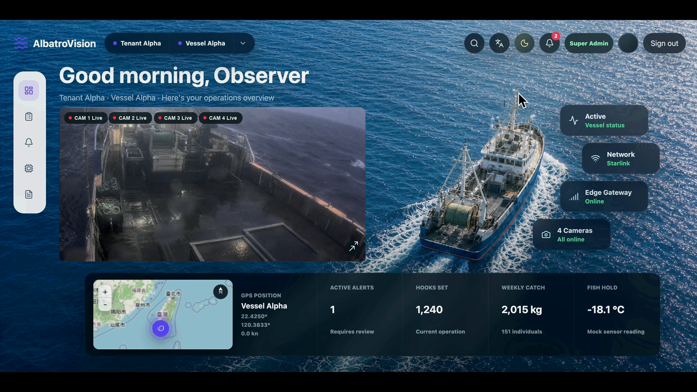

Fleet Dashboard
Monitor vessel status, GPS, network state, fish hold temperature, recent events and Edge Gateway health.
Ocean EM Operations Suite
An ocean video review and electronic observer platform.
AlbatroVision brings Jetson Edge Gateway recordings, AI events, vessel context and human review into one evidence timeline so observers can mark, verify and prepare reports from source video.
Focused on one product line today: ocean electronic observer workflows and fleet monitoring.
Dashboard Edge Evidence Human Analysis EM ReportsPlatform
AlbatroVision is not a generic ERP. It brings vessel status, edge video evidence, human review and report preparation into one operations center for ocean workflows.
Monitor vessel status, GPS, network state, fish hold temperature, recent events and Edge Gateway health.
Receive Jetson recordings, events, thumbnails, clips and transfer acknowledgements while preserving source provenance.
Review AI events on complete source recordings and create official human-editable observer marks.
Project observer marks into electronic observer report candidates with CSV, XLSX and print outputs.
Product Tour
Vessel-centered monitoring brings video, position, Edge Gateway, alerts and operations metrics into one view.

Workflow
The MVP validates one complete workflow: edge evidence is produced, AlbatroVision consolidates it, observers review it on one timeline, and report candidates are prepared from that evidence.
Recording metadata, source video, AI events, detection boxes, thumbnails and transfer state are written under gateway identity.
The dashboard combines vessel context, GPS, temperature, camera lanes and event summaries into a scan-friendly operations surface.
AI events remain raw machine evidence; human marks become the official record, displayed together without overwriting provenance.
The reports workspace maps available data to PM electronic observer fields while making gaps visible.
Demo
This demo shows the operating rhythm of the current ocean solution: Edge Gateway evidence, dashboard monitoring, multi-camera human review and electronic observer reporting.
Schedule a complete walkthrough
Contact
Start with a clear ocean solution, then evaluate how fleet monitoring, edge evidence review and observer workflows connect to current operations before expanding pilot, deployment and commercial details.